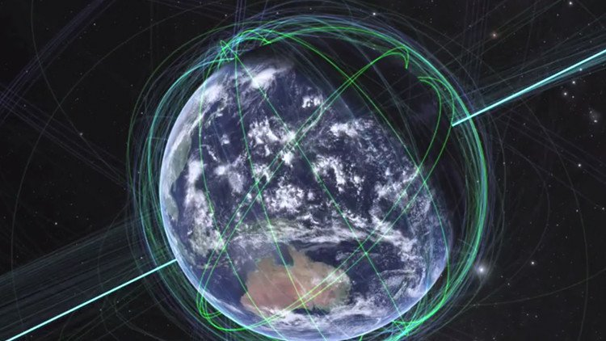

¿Son los extraterrestres un mito?
Mientras los temas más descarnados ocupan las noticias principales, en otro nivel se han seguido desarrollando contradicciones respecto al poder mundial. Uno de estos campos, y de indudable importancia, corresponde al espacio y su control, pues de este dependerá en gran parte el dominio del planeta.
Las últimas noticias presentadas a nivel mundial sobre los extraterrestres pueden ser impactantes pues, según la revista 'Monthly Notices of the Royal Astonomical Society', los astrónomos estadounidenses David Kipping, de la Universidad de Harvard, y Alex Teachey, de la Universidad de Columbia (Estados Unidos), habrían descubierto cómo estos esconden sus planetas a los humanos evitando mostrar rastros de vida a los telescopios denominados 'cazadores de planetas', demostrando que las civilizaciones extraterrestres avanzadas pueden permanecer invisibles gracias a un sistema láser que oculta parcial o completamente sus planetas.
Por ello, algunos cuerpos celestes pueden permanecer invisibles para los aparatos inteligentes de la NASA, lo que se debería a que los habitantes de ciertos mundos pueden utilizar un sistema láser capaz de ocultar parcial o totalmente su planeta, cuya iluminación 'ciega' al Kepler y otros telescopios.
